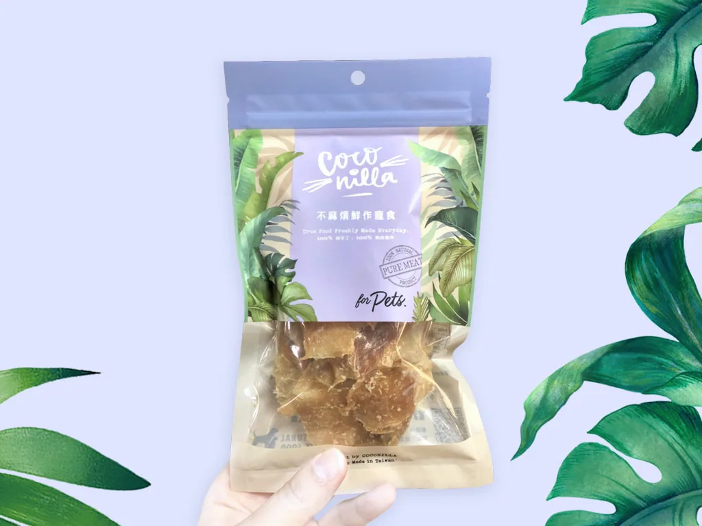
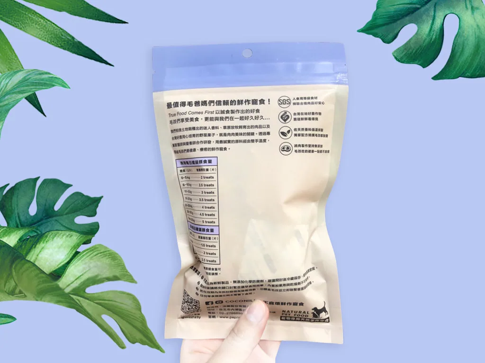
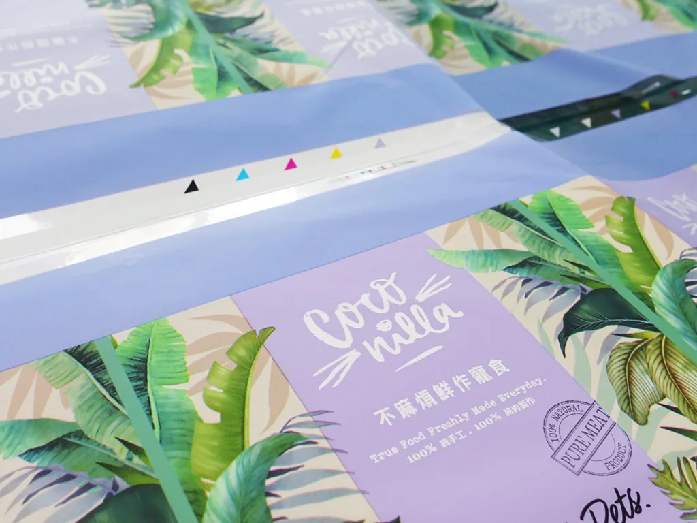

平面設計 ／ Packaging
Coconilla不麻煩鮮作寵食 零食包裝設計
Design for Pep&me Inc.
■ Company -沛麋股份有限公司
■ Brand – Coconilla不麻煩鮮作寵食
此品牌形成之初是創辦人在一次前往南太平洋小島度假中所得到的想法，「島上的居民以鮮採椰子榨出的椰油混合田園裡種植的香草浸泡其中結合而成的Coconilla，是到多年後的現在只要閉上雙眼都還能感受到的幸福記憶，因此種下了小小 願望，希望藉由香氣的療癒力，為心愛的毛孩提供豐富的嗅覺體驗與香氣記憶，一同感受這份驚奇喜悅與滿滿幸福力。」CoConilla不麻煩鮮作寵食因此誕生。
包裝的設計風格因此延續了品牌創立畫面：『熱帶小島』、『香草椰油』、『療癒系寵食』等關鍵要素，繪製了多種熱帶植物作為基礎紋理。色彩計畫利用了具自然療癒力的綠色，以及能帶有穩定、舒緩力的淺紫色作為主軸。外袋材料採用塑膠透明夾鏈袋上白墨及霧膜材質，有效隔絕氧氣與水氣，確保無添加防腐劑的天然健康寵食能完善保存、延長食用時效性。





